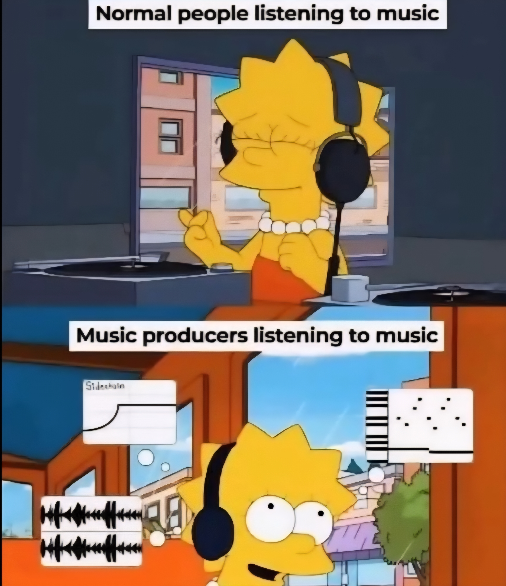

La musique assistée
par ordinateur (MAO) désigne l'ensemble des techniques qui permettent de composer, enregistrer, mixer et
produire de la musique à l'aide d'un ordinateur.
Grâce à des logiciels spécialisés, comme FL Studio, BandLab ou Soundtrap, les musiciens (appelés beatmakers)
peuvent créer des morceaux complets sans avoir besoin d'un studio entier.
La MAO a profondément transformé la manière de faire de la musique. Elle rend la création accessible à tous,
que l'on soit producteur professionnel, DJ, rappeur ou simple passionné. Il suffit d'un ordinateur, d'un
casque et d'un peu de créativité pour commencer à composer.

Ces productions, ce sont des
beats,
des rythmes et instrumentales qui forment la base de nombreux styles modernes, comme le rap, le hip-hop,
l'électro ou la pop.
Un beat est souvent construit à partir de loops (boucles), de samples (extraits sonores) et de sons
synthétisés. Le producteur choisit les sons, les assemble, les modifie et les mixe pour donner une identité
unique à sa musique.
Créer un beat, c'est un peu comme sculpter le son : on joue avec les basses, les percussions, les mélodies
et les effets pour créer une atmosphère ou une émotion.
Ainsi, la musique assistée par ordinateur n'est pas seulement une manière moderne de produire de la musique
:
c'est un langage musical, né du croisement entre technologie et art.